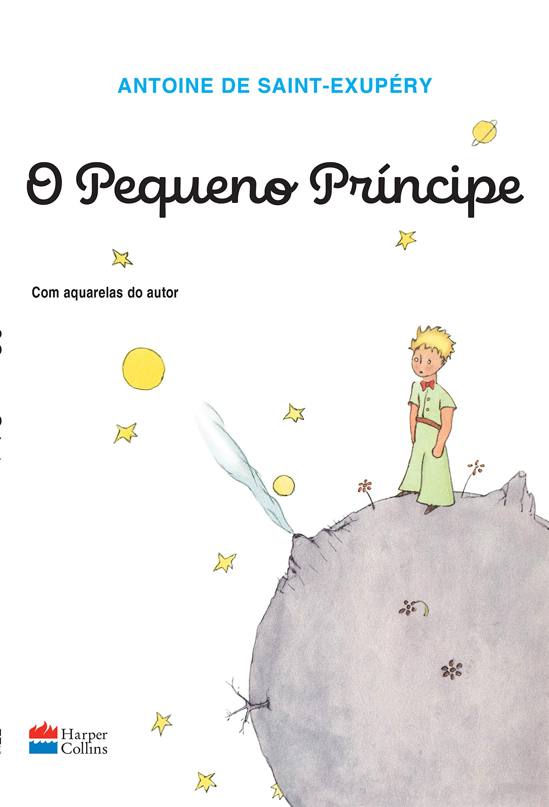

| O PEQUENO PRINCIPE | |
|---|---|
|  |
Sinopse: O livro conta a história do complexo Pequeno Príncipe. Ao narrar a evolução da instituição, seus personagens e o contexto de cada tempo, o livro resgata a memória do cuidado e do amor ao ser humano, devolve a cada um o mistério da infância. De repente retornam os sonhos. Reaparece a lembrança de questionamentos, desvelam-se incoerências acomodadas, quase já imperceptíveis na pressa do dia-a-dia. Voltam ao coração escondidas recordações... O reencontro, o homem-menino. Lançamento: 20/08/2015 Título original: Le Petit Prince Número de páginas: 96 Autor Antoine de Saint-Exupéry |